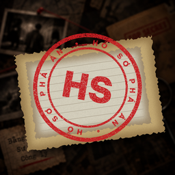

Kênh kể chuyện trinh thám tiếng Việt
Mỗi tập là một hồ sơ vụ án, kể qua lời điều tra viên Đỗ Minh với 30 năm làm điều tra hình sự. Tập mới lúc 20:00 (giờ Việt Nam) thứ Ba và thứ Bảy hằng tuần.
Câu chuyện hư cấu dựa trên các tình tiết điều tra có thật. Tên nhân vật và địa danh đã được thay đổi. Hình ảnh và giọng đọc được tạo bằng công nghệ AI, mang tính minh họa.
Xem kênh trên YouTube"Hồ Sơ Phá Án" is a Vietnamese-language crime storytelling channel on YouTube. This site belongs to the channel owner. The channel uses a private desktop tool, also called "Ho So Pha An", that the owner runs on his own computer to upload videos and thumbnails to his own YouTube channel through the YouTube Data API. The tool is not offered to the public and does not access any other user's account.
See the Privacy Policy for how data is handled.